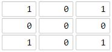
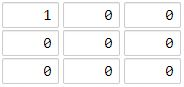

1162. 地图分析
多源 BFS：所有陆地一起入队当 0 层，一圈圈向外扩海洋，距离就是到最近陆地的曼哈顿距离；最后扩到的层就是答案。
思路
- 「每个海洋到最近陆地的距离」反过来想：从所有陆地同时出发 BFS，海洋第一次被摸到时的层数即答案。
dist兼当 visited：陆地 0，海洋 -1（未访问）；出队时给四邻未访问格子写dist+1。- BFS 层数单调不减，最后写入的距离就是全局最大；全陆（没得扩）或全海（队空）返回
-1。
图解
最优解
1import java.util.*;2 3class Solution {4 public int maxDistance(int[][] grid) {5 int n = grid.length;6 int[][] dist = new int[n][n];7 Deque<Integer> q = new ArrayDeque<>();8 for (int i = 0; i < n; i++)9 for (int j = 0; j < n; j++)10 // 陆地是多个 BFS 起点，距离 0；海洋未访问记 -111 if (grid[i][j] == 1) { dist[i][j] = 0; q.add(i * n + j); }12 else dist[i][j] = -1;13 int[] dr = {-1, 1, 0, 0}, dc = {0, 0, -1, 1};14 int ans = -1;15 while (!q.isEmpty()) {16 int cur = q.poll(), i = cur / n, j = cur % n;17 for (int d = 0; d < 4; d++) {18 int x = i + dr[d], y = j + dc[d];19 if (x < 0 || x >= n || y < 0 || y >= n || dist[x][y] != -1) continue;20 dist[x][y] = dist[i][j] + 1;21 ans = Math.max(ans, dist[x][y]);22 q.add(x * n + y);23 }24 }25 // 全是陆地（没格子可扩）或全是海洋（队空）都是 -126 return ans;27 }28}题目
你现在手里有一份大小为 n x n 的 网格 grid，上面的每个 单元格 都用 0 和 1 标记好了。其中 0 代表海洋，1 代表陆地。
请你找出一个海洋单元格，这个海洋单元格到离它最近的陆地单元格的距离是最大的，并返回该距离。如果网格上只有陆地或者海洋，请返回 -1。
我们这里说的距离是「曼哈顿距离」（ Manhattan Distance）：(x0, y0) 和 (x1, y1) 这两个单元格之间的距离是 |x0 - x1| + |y0 - y1| 。
示例 1：

输入：grid = [[1,0,1],[0,0,0],[1,0,1]] 输出：2 解释： 海洋单元格 (1, 1) 和所有陆地单元格之间的距离都达到最大，最大距离为 2。
示例 2：

输入：grid = [[1,0,0],[0,0,0],[0,0,0]] 输出：4 解释： 海洋单元格 (2, 2) 和所有陆地单元格之间的距离都达到最大，最大距离为 4。
提示：
n == grid.lengthn == grid[i].length1 <= n <= 100grid[i][j]不是0就是1
题面取自力扣当前版本。
数据快照 2026-11-04。题面版权归力扣所有，本站点仅供本人学习使用，请勿对外发布。